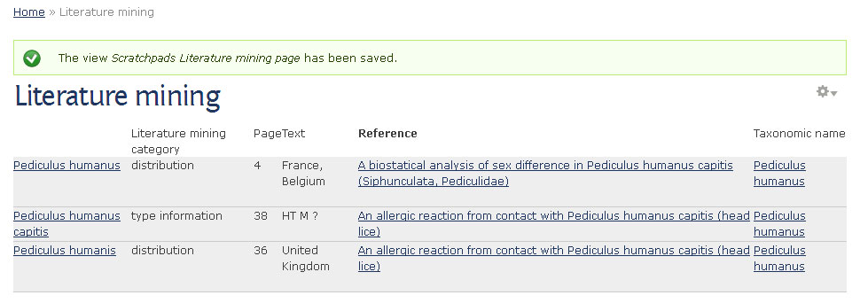

Adding and editing views¶
The views module allows you to create, manage, and display lists of content.
Each list managed by the views module is known as a “view”, and the output of a view is known as a “display”.
Displays are provided in either block or page form, and a single view may have multiple displays.
Enable views interface¶
To enable views go to Structure in the Admin menu, click on Tools, enable ‘Views’ and save.
Table view¶
We will create a table view for the custom literature mining content type we created in Custom content.
- Before starting you will need:
- The Literature mining content type (see Custom content)
- Several Literature mining nodes
Views can modify how lists of content are displayed on your site. The default display format for a new content type is an HTML list, but this can be changed to a table, grid or for example a map to display your data in an optimal way.
For the Literature mining content type a table would be best, so that is what we are going to do:
Click on the LITERATURE MININGS tab in the Main menu and then on the cog icon to the right of the node title. Click on Edit view.

Literature mining page with default HTML list display, showing edit link (top right)
Tip: Can’t see the cog icon? Have you Enable views interface?
This will open the edit view administration interface.

Edit view administration page
Change Title¶
The system automatically added an “s” to the view title as well as the menu item. We will start by correcting this.
- In the edit view interface, click Literature minings link in the ‘Title’ section.
- Delete the “s” from the title.
- Usually, when you edit any part of the view, you can decide whether you want to edit all displays and thereby change the default, or just the current page and thereby override the default settings only for this case. In our case we want to change the title for all displays, so click on the Apply (all displays) button.
- A yellow message (“All changes are stored temporarily…”) appears at the top of the page to make you aware that your changes are not permanent yet.
- Click on the Save button in the upper right corner to make your changes permanent. This will automatically bring you back to the page view where you can check the changes.
You will notice that the menu item in the Main menu is still with an extra “s”, so we need to change this, too.
Display Format¶
We want to change the default HTML list view to a table.
- click on “HTML list” in the ‘Format’ section.
Edit view: Change format
- Select Table.
- Apply.
At the bottom of the ‘Edit view’ page you can now see an example of what our new view is going to look like. As you can see, only the title field is showing, so we need to add more fields. Before we do this however, save the view and edit again.
Fields¶
The table view display requires you to chose which fields to include - you can see a new section called Fields has appeared below the Format section.
Click on the Add link to add more fields.
Select Content: Literature mining category, and then select the fields:
- Content: Page
- Content: Text
- Field: Reference
- Field: Taxonomic name
Note that below each field name is a list of the content types in which it appears, so you can find fields by searching for the literature mining content type.
Click Apply
Now you can configure the fields you selected one by one. The default is usually fine, so you don’t need to change anything. However, you could for example make the column header (label) bold by clicking on Style settings , selecting ‘Customize label HTML’ and choosing “STRONG” from the ‘Label HTML element’ dropdown menu.
Table view
Change the field order by clicking on the arrow down icon next to the add link in the ‘Fields’ section. Click on the rearrange link. Drag and drop the fields into a better order. Apply.
Select Save to make the changes permanent.
Filter criteria¶
Filters restrict a view to a certain set of data. Filters can be hidden or exposed. Exposed filters can be used by the users to search for certain data.
Two filters are already present for this view. The “Published (Yes)” filter that ensures that only published content will be shown in this view and the “Type (= Literature mining)” filter that ensures that only literature mining content is shown.
To help users in finding certain literature mining content we are now going to add a few filters that are exposed to the users.
- Click on the Add link in the ‘Filter criteria’ section.
- Select the fields:
- Content: Literature mining category (field_literature_mining_category)
- Field: Taxonomic name (field_taxonomic_name)
- Field: Reference (field_reference)
- Select Apply
- Next configure each of the fields in turn. Adapt the labels and select “Expose this filter to visitors…” for all of them. For the taxonomic name filter also select “Expose operator” and “Allow multiple selections”.
- Save the view.
Header¶
It would be nice to add some introductory text above the table. The area above the table is called “Header” and the one below is the “Footer”. So we’ll need to add a header:
- Edit the view again and click on add for the ‘Header’.
- Select “Global: Result summary” to get a summary of the number of items on the page and select “Global: Text area” for our introductory text. Next you can configure both fields. Add some introductory field in the text area field.
Table settings¶
With the right settings, the table rows (items) can be sorted by clicking on the header of the respective column.

- Edit view
- Click on the Settings link next to Table in the Format section.
- Check Sortable for the title, reference and category fields.
- Click Apply
- Save changes
Pager¶
The default for tables is to use a pager that shows 10 items per page. To view more items the user has to click to the next page(s).
Views with pagination are quicker to load because only the first page needs to be uploaded. However, one problem with using pagers is that the sorting only works within a page not across all items. If we want to be able sort all items, we need to disable the pager.
- Click on the Full link next to Use pager in the Pager section.
- Select Display all terms.
- Click Apply.
- Leave the offset as 0. Click Apply again.
- Click Save to make changes permanent.
Sort criteria¶
The default sort criterion is the creation date of the items, with the most recent nodes at the top. You can change the sort criteria or add criteria in the ‘Sort criteria’ section.
Additional displays¶
In addition to changing the existing display, you can add new displays.

- Click on the Add button in the ‘Displays’ section near the top of the views administration page.
- Select one of the display options:
- Attachment: With this display, you can attach one display of a view to another display. This allows you to group different views together.
- Block: Creates a block display.
- Data export: Creates a file.
- Feed: Creates a feed.
- Page: Creates a page display.
- References: Creates a references view that can be added for example as a field (e.g. node references view) to custom content types.
TIP: Take care when changing the settings of your new display that you only change the current display (override) and not all displays.
We will learn more about adding one of these displays in the next section - View blocks